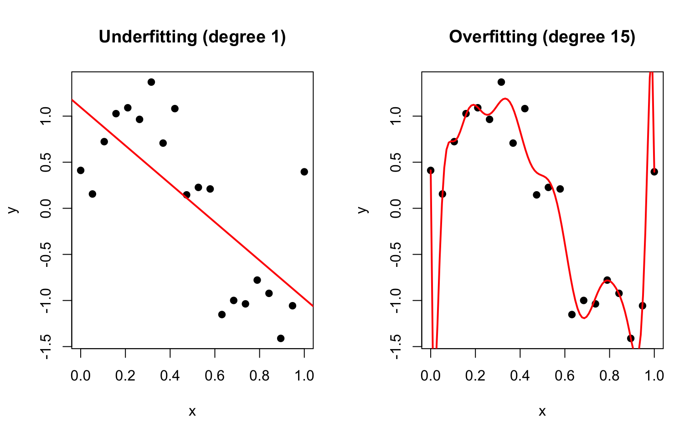

A model is a simplified representation of reality that helps us understand, explain, or predict phenomena. In statistics and data science, models are mathematical relationships between variables that capture patterns in data while ignoring irrelevant details.
“All models are wrong, but some are useful.” — George Box
This famous quote captures the fundamental truth of modeling: no model perfectly represents reality, but a good model can still provide valuable insights and predictions.
21.2 Two Cultures of Statistical Modeling
In his influential 2001 paper, Leo Breiman identified two cultures in statistical modeling:
The Data Modeling Culture (traditional statistics):
Assumes data are generated by a specific stochastic model
Focus on estimating parameters and testing hypotheses
Emphasis on interpretability and understanding mechanisms
Examples: linear regression, ANOVA, generalized linear models
The Algorithmic Modeling Culture (machine learning):
Treats the data-generating mechanism as unknown
Focus on predictive accuracy
Emphasis on performance over interpretability
Examples: random forests, neural networks, boosting
Both approaches have value. Traditional models excel at inference and explanation; algorithmic approaches often produce better predictions. The choice depends on whether your goal is understanding or prediction.
21.3 The General Linear Model Framework
Most statistical models you encounter are special cases of the General Linear Model (GLM):
\[Y = X\beta + \epsilon\]
where:
\(Y\) is the response variable (what we want to predict/explain)
\(X\) is the design matrix of predictor variables
\(\beta\) are coefficients we estimate
\(\epsilon\) is random error
This framework unifies many methods:
Method
Response Type
Predictors
One-sample t-test
Continuous
None (intercept only)
Two-sample t-test
Continuous
One categorical (2 levels)
ANOVA
Continuous
One or more categorical
Simple regression
Continuous
One continuous
Multiple regression
Continuous
Multiple (any type)
ANCOVA
Continuous
Mixed categorical and continuous
The beauty of this unified framework is that once you understand regression, you understand the entire family of linear models.
21.4 Components of a Statistical Model
Every statistical model specifies:
Response variable: What we want to predict or explain
Predictor variables: Information we use to make predictions
Functional form: How predictors relate to the response (linear, polynomial, etc.)
Error structure: Assumptions about variability (normally distributed, etc.)
Code
# Visualizing a simple linear modelset.seed(42)x <-1:50y <-2+0.5*x +rnorm(50, sd =3)plot(x, y, pch =19, col ="steelblue",main ="Components of a Linear Model",xlab ="Predictor (X)", ylab ="Response (Y)")# Fitted line (the model)model <-lm(y ~ x)abline(model, col ="red", lwd =2)# Show residuals for a few pointssegments(x[c(10,25,40)], y[c(10,25,40)], x[c(10,25,40)], fitted(model)[c(10,25,40)],col ="darkgreen", lwd =2)text(x[25] +3, (y[25] +fitted(model)[25])/2,"ε (residual)", col ="darkgreen")legend("topleft",c("Data points", "Model (E[Y|X])", "Residuals (ε)"),pch =c(19, NA, NA), lty =c(NA, 1, 1),col =c("steelblue", "red", "darkgreen"), lwd =2)
Figure 21.1: Components of a linear model showing data points, the fitted model line representing E[Y|X], and residuals (ε) as vertical deviations from the line
21.5 Model Fitting: Finding the Best Parameters
Model fitting is the process of finding parameter values that make the model best explain the observed data.
Least Squares
For linear models, least squares minimizes the sum of squared residuals:
For normally distributed errors, least squares and MLE give identical results. MLE extends to non-normal distributions and complex models.
Code
# Visualize likelihood for estimating a meanset.seed(123)data <-rnorm(20, mean =5, sd =2)# Calculate log-likelihood for different values of mumu_values <-seq(3, 7, length.out =100)log_lik <-sapply(mu_values, function(mu) {sum(dnorm(data, mean = mu, sd =2, log =TRUE))})par(mfrow =c(1, 2))# Data histogramhist(data, breaks =10, main ="Sample Data", xlab ="Value",col ="lightblue", border ="white")abline(v =mean(data), col ="red", lwd =2)# Log-likelihood curveplot(mu_values, log_lik, type ="l", lwd =2, col ="blue",xlab =expression(mu), ylab ="Log-likelihood",main ="Maximum Likelihood Estimation")abline(v = mu_values[which.max(log_lik)], col ="red", lwd =2, lty =2)text(mu_values[which.max(log_lik)], min(log_lik) +2,paste("MLE =", round(mu_values[which.max(log_lik)], 2)))
Figure 21.2: Maximum likelihood estimation for the mean of a normal distribution, showing sample data (left) and the log-likelihood curve (right) with maximum at the MLE
21.6 Overfitting: When Models Learn Too Much
Overfitting occurs when a model captures noise rather than signal—it fits the training data extremely well but fails to generalize to new data.
Code
# Demonstrate overfitting with polynomial regressionset.seed(42)n <-20x <-seq(0, 1, length.out = n)y_true <-sin(2*pi*x)y <- y_true +rnorm(n, sd =0.3)par(mfrow =c(1, 2))# Underfitting (too simple)plot(x, y, pch =19, main ="Underfitting (degree 1)")abline(lm(y ~ x), col ="red", lwd =2)# Overfitting (too complex)plot(x, y, pch =19, main ="Overfitting (degree 15)")x_new <-seq(0, 1, length.out =100)lines(x_new, predict(lm(y ~poly(x, 15)),newdata =data.frame(x = x_new)),col ="red", lwd =2)

Figure 21.3: Demonstration of underfitting (degree 1 polynomial, left) and overfitting (degree 15 polynomial, right) in regression models
Signs of overfitting:
Model fits training data nearly perfectly
Predictions on new data are poor
Coefficients are extremely large or unstable
Small changes in data produce very different models
The Bias-Variance Tradeoff
Prediction error has two sources:
Bias: Error from oversimplifying—missing important patterns
Variance: Error from oversensitivity—fitting noise
Figure 21.4: The bias-variance tradeoff showing how total prediction error decomposes into bias squared, variance, and irreducible error, with optimal model complexity at the minimum total error
21.7 Feature Engineering and Transformations
The raw predictor variables may not capture the true relationship. Feature engineering creates new variables that better represent the underlying patterns.
Common transformations:
Polynomial terms: \(x^2\), \(x^3\) for curved relationships
Log transform: \(\log(x)\) for multiplicative relationships
Interactions: \(x_1 \times x_2\) when effects depend on each other
Categorical encoding: Converting categories to numbers
Code
# Example: log transformationset.seed(42)x <-runif(50, 1, 100)y <-2*log(x) +rnorm(50, sd =0.5)par(mfrow =c(1, 2))# Raw scale - looks nonlinearplot(x, y, pch =19, main ="Original Scale",xlab ="X", ylab ="Y")abline(lm(y ~ x), col ="red", lwd =2)# Log scale - linearplot(log(x), y, pch =19, main ="After Log Transform",xlab ="log(X)", ylab ="Y")abline(lm(y ~log(x)), col ="red", lwd =2)
Figure 21.5: Effect of log transformation on a nonlinear relationship, showing curved pattern on original scale (left) that becomes linear after log transformation (right)
21.8 Model Selection
When multiple models are possible, how do we choose? Several criteria exist:
AIC (Akaike Information Criterion): Balances fit and complexity \[AIC = -2\ln(L) + 2k\]
BIC (Bayesian Information Criterion): Heavier penalty for complexity \[BIC = -2\ln(L) + k\ln(n)\]
Lower AIC/BIC values indicate better models (balancing fit and parsimony).
Code
# Model selection exampledata(mtcars)# Compare models of increasing complexitym1 <-lm(mpg ~ wt, data = mtcars)m2 <-lm(mpg ~ wt + hp, data = mtcars)m3 <-lm(mpg ~ wt + hp + disp, data = mtcars)m4 <-lm(mpg ~ wt + hp + disp + drat + qsec, data = mtcars)# Compare using AICmodels <-list(m1, m2, m3, m4)comparison <-data.frame(Model =c("mpg ~ wt", "mpg ~ wt + hp","mpg ~ wt + hp + disp","mpg ~ wt + hp + disp + drat + qsec"),R_squared =sapply(models, function(m) summary(m)$r.squared),Adj_R_squared =sapply(models, function(m) summary(m)$adj.r.squared),AIC =sapply(models, AIC),BIC =sapply(models, BIC))knitr::kable(comparison, digits =2)
Model
R_squared
Adj_R_squared
AIC
BIC
mpg ~ wt
0.75
0.74
166.03
170.43
mpg ~ wt + hp
0.83
0.81
156.65
162.52
mpg ~ wt + hp + disp
0.83
0.81
158.64
165.97
mpg ~ wt + hp + disp + drat + qsec
0.85
0.82
158.28
168.54
21.9 Cross-Validation for Model Assessment
The gold standard for evaluating predictive performance is cross-validation: testing the model on data it hasn’t seen.
K-fold cross-validation: 1. Split data into K parts 2. For each part: train on the other K-1 parts, test on the held-out part 3. Average performance across all K tests
Code
library(boot)# Compare polynomial degrees using cross-validationset.seed(42)n <-100x <-seq(0, 4*pi, length.out = n)y <-sin(x) +rnorm(n, sd =0.5)data_cv <-data.frame(x, y)# Calculate CV error for different polynomial degreesdegrees <-1:15cv_errors <-sapply(degrees, function(d) { model <-glm(y ~poly(x, d), data = data_cv)cv.glm(data_cv, model, K =10)$delta[1]})plot(degrees, cv_errors, type ="b", pch =19,xlab ="Polynomial Degree", ylab ="CV Error",main ="Cross-Validation for Model Selection")abline(v =which.min(cv_errors), col ="red", lty =2)
Figure 21.6: Cross-validation error for polynomial models of different degrees, showing optimal model complexity at minimum CV error
21.10 Prediction vs. Explanation
Different goals require different approaches:
For Explanation:
Simpler models are often preferable
Focus on coefficient interpretation
Statistical significance matters
Understand which variables drive the relationship
For Prediction:
Model complexity can be higher if it helps
Focus on out-of-sample performance
Accuracy metrics matter most
Understanding why is secondary
In biology and bioengineering, we often want both—models that predict well AND provide mechanistic insight. This tension shapes many modeling decisions.
21.11 Practical Modeling Workflow
Define the question: What are you trying to learn or predict?
Explore the data: Visualize relationships, check distributions, identify issues
Choose candidate models: Based on data type, assumptions, and goals
Fit and evaluate: Use appropriate metrics and validation
Report honestly: Including limitations and uncertainty
21.12 Summary
Models are simplified representations of reality that help us understand and predict
The general linear model framework unifies many common statistical methods
Model fitting finds parameters that best explain the data (least squares, MLE)
Overfitting occurs when models learn noise instead of signal
The bias-variance tradeoff governs model complexity choices
Feature engineering can improve model performance
Cross-validation provides honest estimates of predictive performance
Different goals (prediction vs. explanation) may favor different approaches
21.13 Additional Resources
James et al. (2023) - Comprehensive introduction to statistical learning concepts
Crawley (2007) - Practical guide to statistical modeling in R
Breiman, L. (2001). Statistical Modeling: The Two Cultures. Statistical Science, 16(3), 199-231.
Crawley, Michael J. 2007. The r Book. John Wiley & Sons.
James, Gareth, Daniela Witten, Trevor Hastie, and Robert Tibshirani. 2023. An Introduction to Statistical Learning with Applications in r. 2nd ed. Springer. https://www.statlearning.com.
Source Code
# What are Models? {#sec-what-are-models}```{r}#| echo: false#| message: falselibrary(tidyverse)theme_set(theme_minimal())```## The Essence of ModelingA **model** is a simplified representation of reality that helps us understand, explain, or predict phenomena. In statistics and data science, models are mathematical relationships between variables that capture patterns in data while ignoring irrelevant details.> "All models are wrong, but some are useful." — George BoxThis famous quote captures the fundamental truth of modeling: no model perfectly represents reality, but a good model can still provide valuable insights and predictions.## Two Cultures of Statistical ModelingIn his influential 2001 paper, Leo Breiman identified **two cultures** in statistical modeling:**The Data Modeling Culture** (traditional statistics):- Assumes data are generated by a specific stochastic model- Focus on estimating parameters and testing hypotheses- Emphasis on interpretability and understanding mechanisms- Examples: linear regression, ANOVA, generalized linear models**The Algorithmic Modeling Culture** (machine learning):- Treats the data-generating mechanism as unknown- Focus on predictive accuracy- Emphasis on performance over interpretability- Examples: random forests, neural networks, boostingBoth approaches have value. Traditional models excel at inference and explanation; algorithmic approaches often produce better predictions. The choice depends on whether your goal is understanding or prediction.## The General Linear Model FrameworkMost statistical models you encounter are special cases of the **General Linear Model (GLM)**:$$Y = X\beta + \epsilon$$where:- $Y$ is the response variable (what we want to predict/explain)- $X$ is the design matrix of predictor variables- $\beta$ are coefficients we estimate- $\epsilon$ is random errorThis framework unifies many methods:| Method | Response Type | Predictors ||:-------|:-------------|:-----------|| One-sample t-test | Continuous | None (intercept only) || Two-sample t-test | Continuous | One categorical (2 levels) || ANOVA | Continuous | One or more categorical || Simple regression | Continuous | One continuous || Multiple regression | Continuous | Multiple (any type) || ANCOVA | Continuous | Mixed categorical and continuous |The beauty of this unified framework is that once you understand regression, you understand the entire family of linear models.## Components of a Statistical ModelEvery statistical model specifies:1. **Response variable**: What we want to predict or explain2. **Predictor variables**: Information we use to make predictions3. **Functional form**: How predictors relate to the response (linear, polynomial, etc.)4. **Error structure**: Assumptions about variability (normally distributed, etc.)```{r}#| label: fig-model-components#| fig-cap: "Components of a linear model showing data points, the fitted model line representing E[Y|X], and residuals (ε) as vertical deviations from the line"#| fig-width: 7#| fig-height: 5# Visualizing a simple linear modelset.seed(42)x <-1:50y <-2+0.5*x +rnorm(50, sd =3)plot(x, y, pch =19, col ="steelblue",main ="Components of a Linear Model",xlab ="Predictor (X)", ylab ="Response (Y)")# Fitted line (the model)model <-lm(y ~ x)abline(model, col ="red", lwd =2)# Show residuals for a few pointssegments(x[c(10,25,40)], y[c(10,25,40)], x[c(10,25,40)], fitted(model)[c(10,25,40)],col ="darkgreen", lwd =2)text(x[25] +3, (y[25] +fitted(model)[25])/2,"ε (residual)", col ="darkgreen")legend("topleft",c("Data points", "Model (E[Y|X])", "Residuals (ε)"),pch =c(19, NA, NA), lty =c(NA, 1, 1),col =c("steelblue", "red", "darkgreen"), lwd =2)```## Model Fitting: Finding the Best Parameters**Model fitting** is the process of finding parameter values that make the model best explain the observed data.### Least SquaresFor linear models, **least squares** minimizes the sum of squared residuals:$$\text{minimize} \sum_{i=1}^{n} (y_i - \hat{y}_i)^2$$This produces the best linear unbiased estimators (BLUE) under certain conditions.### Maximum Likelihood**Maximum likelihood estimation (MLE)** finds parameters that maximize the probability of observing the data:$$\hat{\theta} = \arg\max_{\theta} L(\theta | \text{data}) = \arg\max_{\theta} \prod_{i=1}^{n} f(y_i | \theta)$$For normally distributed errors, least squares and MLE give identical results. MLE extends to non-normal distributions and complex models.```{r}#| label: fig-mle-example#| fig-cap: "Maximum likelihood estimation for the mean of a normal distribution, showing sample data (left) and the log-likelihood curve (right) with maximum at the MLE"#| fig-width: 8#| fig-height: 4# Visualize likelihood for estimating a meanset.seed(123)data <-rnorm(20, mean =5, sd =2)# Calculate log-likelihood for different values of mumu_values <-seq(3, 7, length.out =100)log_lik <-sapply(mu_values, function(mu) {sum(dnorm(data, mean = mu, sd =2, log =TRUE))})par(mfrow =c(1, 2))# Data histogramhist(data, breaks =10, main ="Sample Data", xlab ="Value",col ="lightblue", border ="white")abline(v =mean(data), col ="red", lwd =2)# Log-likelihood curveplot(mu_values, log_lik, type ="l", lwd =2, col ="blue",xlab =expression(mu), ylab ="Log-likelihood",main ="Maximum Likelihood Estimation")abline(v = mu_values[which.max(log_lik)], col ="red", lwd =2, lty =2)text(mu_values[which.max(log_lik)], min(log_lik) +2,paste("MLE =", round(mu_values[which.max(log_lik)], 2)))```## Overfitting: When Models Learn Too Much**Overfitting** occurs when a model captures noise rather than signal—it fits the training data extremely well but fails to generalize to new data.```{r}#| label: fig-overfitting#| fig-cap: "Demonstration of underfitting (degree 1 polynomial, left) and overfitting (degree 15 polynomial, right) in regression models"#| fig-width: 8#| fig-height: 5# Demonstrate overfitting with polynomial regressionset.seed(42)n <-20x <-seq(0, 1, length.out = n)y_true <-sin(2*pi*x)y <- y_true +rnorm(n, sd =0.3)par(mfrow =c(1, 2))# Underfitting (too simple)plot(x, y, pch =19, main ="Underfitting (degree 1)")abline(lm(y ~ x), col ="red", lwd =2)# Overfitting (too complex)plot(x, y, pch =19, main ="Overfitting (degree 15)")x_new <-seq(0, 1, length.out =100)lines(x_new, predict(lm(y ~poly(x, 15)),newdata =data.frame(x = x_new)),col ="red", lwd =2)```Signs of overfitting:- Model fits training data nearly perfectly- Predictions on new data are poor- Coefficients are extremely large or unstable- Small changes in data produce very different models### The Bias-Variance TradeoffPrediction error has two sources:**Bias**: Error from oversimplifying—missing important patterns**Variance**: Error from oversensitivity—fitting noise$$\text{Total Error} = \text{Bias}^2 + \text{Variance} + \text{Irreducible Error}$$Simple models have high bias but low variance. Complex models have low bias but high variance. The goal is to find the sweet spot.```{r}#| label: fig-bias-variance-tradeoff#| fig-cap: "The bias-variance tradeoff showing how total prediction error decomposes into bias squared, variance, and irreducible error, with optimal model complexity at the minimum total error"#| fig-width: 7#| fig-height: 5# Conceptual bias-variance plotcomplexity <-1:20bias_sq <-10/ complexityvariance <-0.5* complexitytotal <- bias_sq + variance +2# irreducible error = 2plot(complexity, total, type ="l", lwd =2,ylim =c(0, max(total) +1),xlab ="Model Complexity", ylab ="Error",main ="Bias-Variance Tradeoff")lines(complexity, bias_sq, col ="blue", lwd =2, lty =2)lines(complexity, variance, col ="red", lwd =2, lty =2)abline(h =2, col ="gray", lty =3)# Optimal complexityoptimal <-which.min(total)points(optimal, total[optimal], pch =19, cex =1.5, col ="darkgreen")legend("topright",c("Total Error", "Bias²", "Variance", "Irreducible"),col =c("black", "blue", "red", "gray"),lty =c(1, 2, 2, 3), lwd =2)```## Feature Engineering and TransformationsThe raw predictor variables may not capture the true relationship. **Feature engineering** creates new variables that better represent the underlying patterns.Common transformations:- **Polynomial terms**: $x^2$, $x^3$ for curved relationships- **Log transform**: $\log(x)$ for multiplicative relationships- **Interactions**: $x_1 \times x_2$ when effects depend on each other- **Categorical encoding**: Converting categories to numbers```{r}#| label: fig-log-transform#| fig-cap: "Effect of log transformation on a nonlinear relationship, showing curved pattern on original scale (left) that becomes linear after log transformation (right)"#| fig-width: 8#| fig-height: 4# Example: log transformationset.seed(42)x <-runif(50, 1, 100)y <-2*log(x) +rnorm(50, sd =0.5)par(mfrow =c(1, 2))# Raw scale - looks nonlinearplot(x, y, pch =19, main ="Original Scale",xlab ="X", ylab ="Y")abline(lm(y ~ x), col ="red", lwd =2)# Log scale - linearplot(log(x), y, pch =19, main ="After Log Transform",xlab ="log(X)", ylab ="Y")abline(lm(y ~log(x)), col ="red", lwd =2)```## Model SelectionWhen multiple models are possible, how do we choose? Several criteria exist:**Adjusted R²**: Penalizes for additional parameters$$R^2_{adj} = 1 - \frac{(1-R^2)(n-1)}{n-p-1}$$**AIC (Akaike Information Criterion)**: Balances fit and complexity$$AIC = -2\ln(L) + 2k$$**BIC (Bayesian Information Criterion)**: Heavier penalty for complexity$$BIC = -2\ln(L) + k\ln(n)$$Lower AIC/BIC values indicate better models (balancing fit and parsimony).```{r}# Model selection exampledata(mtcars)# Compare models of increasing complexitym1 <-lm(mpg ~ wt, data = mtcars)m2 <-lm(mpg ~ wt + hp, data = mtcars)m3 <-lm(mpg ~ wt + hp + disp, data = mtcars)m4 <-lm(mpg ~ wt + hp + disp + drat + qsec, data = mtcars)# Compare using AICmodels <-list(m1, m2, m3, m4)comparison <-data.frame(Model =c("mpg ~ wt", "mpg ~ wt + hp","mpg ~ wt + hp + disp","mpg ~ wt + hp + disp + drat + qsec"),R_squared =sapply(models, function(m) summary(m)$r.squared),Adj_R_squared =sapply(models, function(m) summary(m)$adj.r.squared),AIC =sapply(models, AIC),BIC =sapply(models, BIC))knitr::kable(comparison, digits =2)```## Cross-Validation for Model AssessmentThe gold standard for evaluating predictive performance is **cross-validation**: testing the model on data it hasn't seen.**K-fold cross-validation**:1. Split data into K parts2. For each part: train on the other K-1 parts, test on the held-out part3. Average performance across all K tests```{r}#| label: fig-cross-validation#| fig-cap: "Cross-validation error for polynomial models of different degrees, showing optimal model complexity at minimum CV error"#| fig-width: 6#| fig-height: 5library(boot)# Compare polynomial degrees using cross-validationset.seed(42)n <-100x <-seq(0, 4*pi, length.out = n)y <-sin(x) +rnorm(n, sd =0.5)data_cv <-data.frame(x, y)# Calculate CV error for different polynomial degreesdegrees <-1:15cv_errors <-sapply(degrees, function(d) { model <-glm(y ~poly(x, d), data = data_cv)cv.glm(data_cv, model, K =10)$delta[1]})plot(degrees, cv_errors, type ="b", pch =19,xlab ="Polynomial Degree", ylab ="CV Error",main ="Cross-Validation for Model Selection")abline(v =which.min(cv_errors), col ="red", lty =2)```## Prediction vs. ExplanationDifferent goals require different approaches:**For Explanation**:- Simpler models are often preferable- Focus on coefficient interpretation- Statistical significance matters- Understand which variables drive the relationship**For Prediction**:- Model complexity can be higher if it helps- Focus on out-of-sample performance- Accuracy metrics matter most- Understanding why is secondaryIn biology and bioengineering, we often want both—models that predict well AND provide mechanistic insight. This tension shapes many modeling decisions.## Practical Modeling Workflow1. **Define the question**: What are you trying to learn or predict?2. **Explore the data**: Visualize relationships, check distributions, identify issues3. **Choose candidate models**: Based on data type, assumptions, and goals4. **Fit and evaluate**: Use appropriate metrics and validation5. **Check assumptions**: Residual analysis, diagnostic plots6. **Iterate**: Refine based on diagnostics7. **Report honestly**: Including limitations and uncertainty## Summary- Models are simplified representations of reality that help us understand and predict- The general linear model framework unifies many common statistical methods- Model fitting finds parameters that best explain the data (least squares, MLE)- Overfitting occurs when models learn noise instead of signal- The bias-variance tradeoff governs model complexity choices- Feature engineering can improve model performance- Cross-validation provides honest estimates of predictive performance- Different goals (prediction vs. explanation) may favor different approaches## Additional Resources- @james2023islr - Comprehensive introduction to statistical learning concepts- @crawley2007r - Practical guide to statistical modeling in R- Breiman, L. (2001). Statistical Modeling: The Two Cultures. *Statistical Science*, 16(3), 199-231.